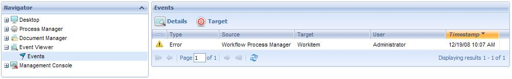
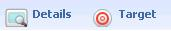
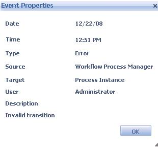
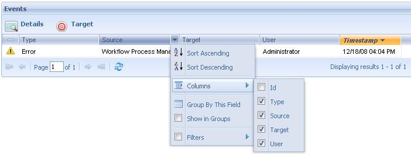

Through the Event Viewer, administrator users can visualize the events occurring in the workflow system and obtain specific information of each one of them. The following figure shows the Events Viewer interface:

The following sections describe the different components making up this application

- Details: It shows a dialog with event details:

- Target: This is the object affected by the event. E.g.: it can be a new document, a new task, an application data, etc.
A link for some objects is enabled in this column that allows accessing a dialog containing specific information on the object.
In case the object is a task or process, the link will access the process history.

The event grid shows the different events that occurred in the system. By default, only those events occurring in the current date will be shown.
- Sort Ascending: It allows to sort the events by the name of the column selected. From A to Z.
- Sort Descending: It allows to sort the events by the name of the column selected. From Z to A.
- Columns: It allow to select the columns wanted to be visible.
- Id: Event Id
- Type: Type of the event that occurred. It may be one of the following:
- New Instance: a new process or task was created
- Change of Data: change of the value of an application data
- Change of Status: change of the status of a process or task
- Change of Priority: change of the priority of a process or task
- Change of Assignment: change of the assignment of a task
- Warning: warning because a process or task is about to expire
- Deadline: deadline of a process or task. It indicates that the process or task has expired.
- Error: an error occurred, such as that a user typed his user or password wrongly on attempting to log into the system.
- Unsatisfied condition: the evaluation of a condition produced an invalid result.
- Unavailable resource: there are no resources (users) available to process the task.
- External Event: an event external to the Workflow system occurred.
- Source: GXflow client application where the event occurred.
- Target: This is the object affected by the event. E.g.: it can be a new document, a new task, an application data, etc.
A link for some objects is enabled in this column that allows accessing a dialog containing specific information on the object.
In case the object is a task or process, the link will access the process history.
- User: User that caused the event (if applicable).
- Group by this field: It allows to group de events by the column selected
- Show in groups: It allows to group the events by the column selected.
- Filters: It allows to filter the events.
For an overview of GXflow client refer to the GXflow Client General Structure section.
|